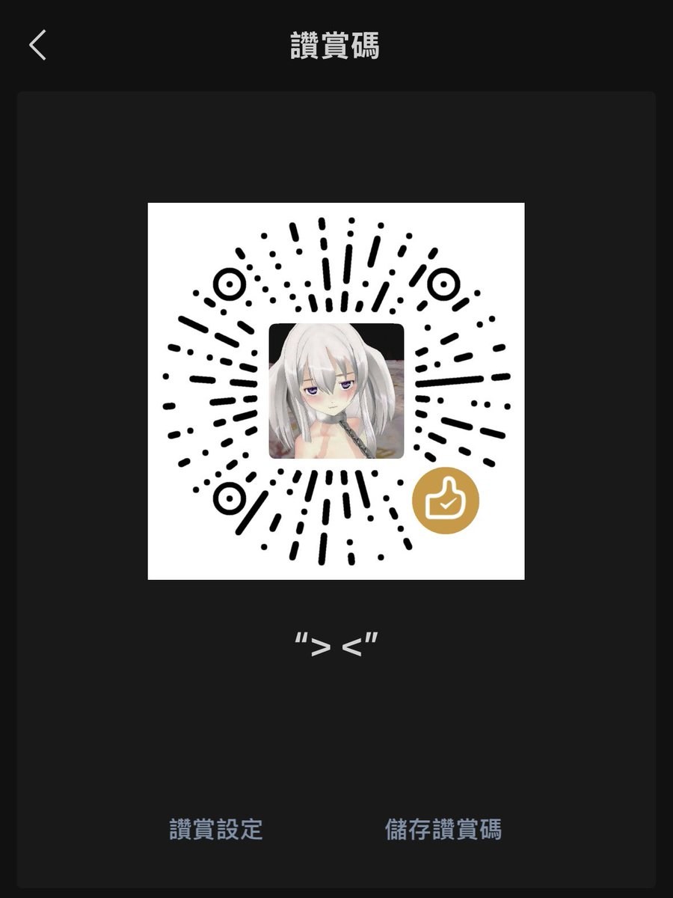

我操这个世界对我好坏
@suzukii_ovo
RT @7kever96: 💟我是77 前世@7kever9640 眼熟我的求关注求转发
💟入门52 口令红包/赞赏码 即可解锁线下
💟喜欢我请多多投喂 欢迎交友互fo互转^
#爸爸活 #妈妈活 #门槛妹 #门槛哥 #爸爸奴 #非绿 #线下 #一日女友 #k8 #…

克克煙
@7kever96
💟我是77 前世@7kever9640 眼熟我的求关注求转发
💟入门52 口令红包/赞赏码 即可解锁线下
💟喜欢我请多多投喂 欢迎交友互fo互转^
#爸爸活 #妈妈活 #门槛妹 #门槛哥 #爸爸奴 #非绿 #线下 #一日女友 #k8 #包养 #金主 https://t.co/0TpWwItgM7